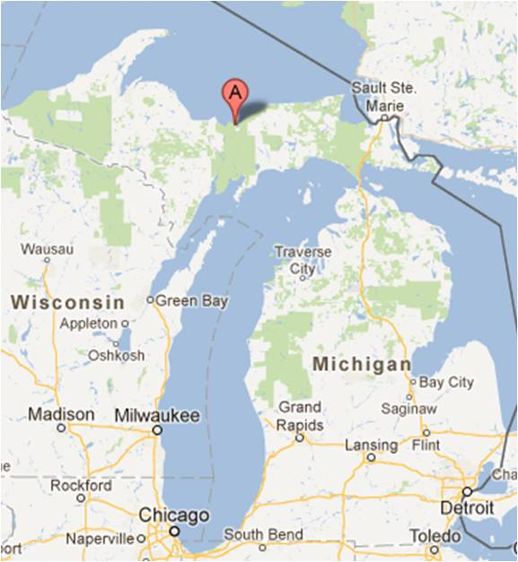
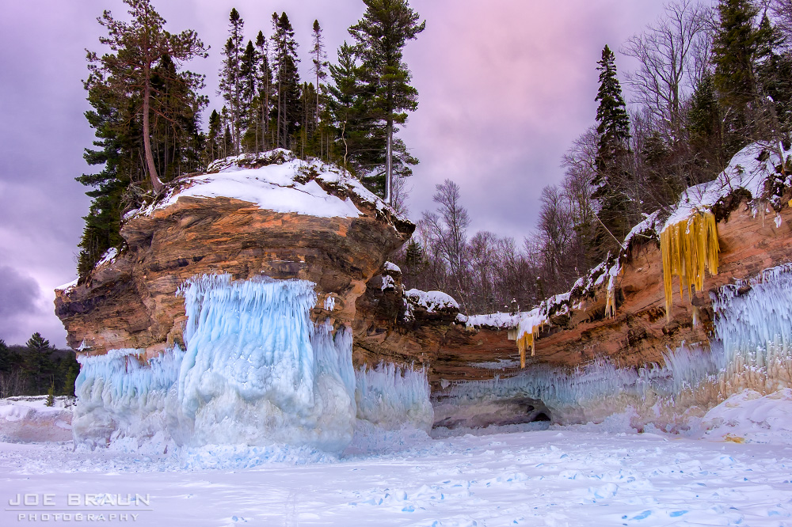
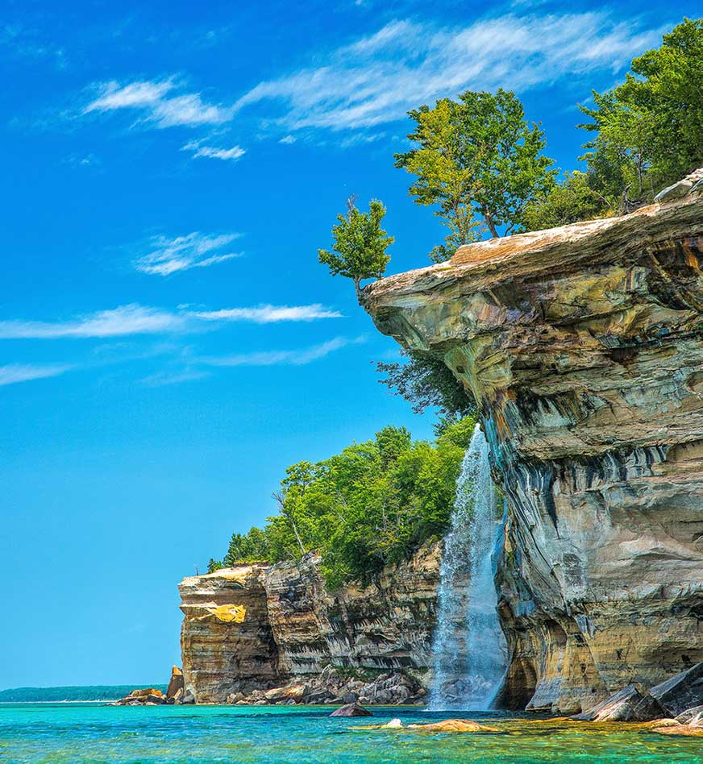
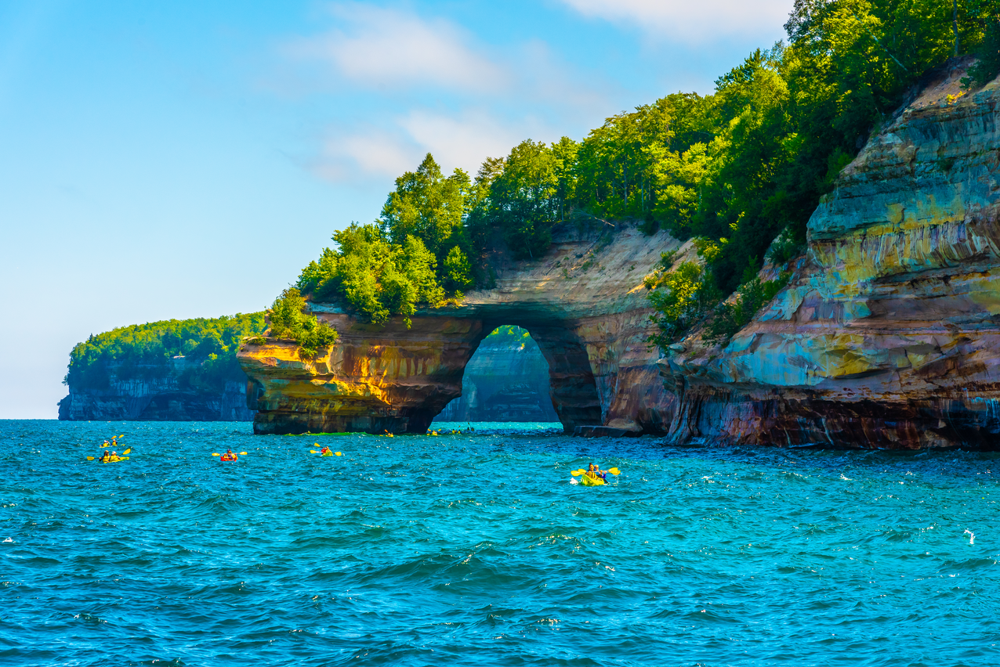

Gallery




Unlike any other place on Lake Superior, Pictured Rocks offers the opportunity to explore miles of pristine beaches, hike nearly 100 miles of trails, view towering sandstone cliffs, and experience the serenity of northern woodlands. In the spring, a new world appears along trails carpeted with the soft beauty of wildflowers. Summer gives way to warm basking days. Hues of orange, red, and yellow signal the wonder of change in autumn. In the winter, the raw windy beauty of snow frequents the days though periodically the snow blazes forth with sunlight.
Visit Us To know More